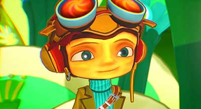
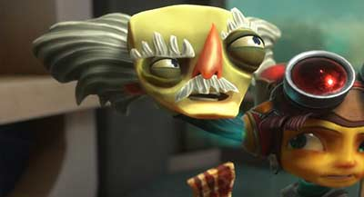
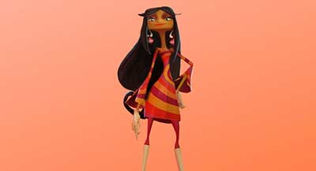
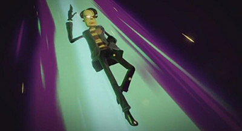

Razputin Aquato
Born with psychic powers but forbidden to use them by his strict father, Raz ran away from home to train to be an international psychic secret agent. In other words, a Psychonaut.
This has been his life's dream, and nothing is going to get in his way now. Not the threats of the camp bully, not the apathy of his cynical but cute girlfriend, not the hideous monster that comes out of the lake at night to eat children's brains-- nothing.
Read more...
Razputin Aquato

New Powers |
|
| Mental Connection | The ability to control someone else's thoughts |
|---|---|
| Time Bubble | The ability to slow down platforms or enemies |
| Mental Projection | The ability to create an archetype of one's self |
Ford Cruller
Janitor, Admiral, Ranger, Chef, and more, Ford is the man behind the scenes at Whispering Rock Psychic Summer Camp.
He keeps it running smoothly, knows all the shortcuts, and somehow manages to be everywhere in camp at once, including a few secret spots where Raz discovers there’s more to Ford than his brooms.
He used to be one of the most powerful psychics of his time, but because of his advanced age and dissociative identity disorder from a terrible psychic duel, he's now limited to the role of a dispatcher.
Read more...
Ford Cruller

Psychic Powers |
|
| Invisibility | Ford teaches Raz this ability |
|---|---|
| Levitation | Ford is seen levitating while confronting Coach Oleander |
| Marksmanship | Ford fires a PSI-Blast at Coach Oleander |
Lili Zanotto
With her long dark reddish pigtails and pink skirt, Lili is the girliest-looking girl in the whole camp. And that without sharing Kitty and Franke‘s obsession with makeup or Elka and Milka‘s obsession with making out. She’s sarcastic, independent, and does not hesitate to tell the adults what she thinks.
She can keep her calmness and courage even in the most threatening situations. Lili has an interest in herbology. In fact, she prefers plants to people, but despite her somewhat antisocial personality, she’s on good terms with Dogen, Chloe, Quentin and Chops.
Read more...
Lili Zanotto

Psychic Powers |
|
| Zoolingualism | The ability to speak to animals |
|---|---|
| Herbaphony | The ability to communicate with plants |
| Astral Projection | Lili can astral project into minds |
Sasha Nein
Sasha Nein is a famous German psychonaut agent partnered with Milla Vodello. He is staffed at Whispering Rock Psychic Summer Camp and is known for conducting science experiments of questionable moral status.
World famous super agent, the cold and logical Sasha is constantly striving to uncover the mysteries of the human psyche through science. He is so focused on his studies that he doesn't have the time to realize that he is a celebrity and hero to the thousands of kids that read True Psychic Tales magazine, like Raz.
Read more...
Sasha Nein

Psychic Powers |
|
| Telekinesis | Uses it to smoke cigarettes |
|---|---|
| Marksmanship | Taught the power to Raz |
| Levitation | He floats off the platform after giving Raz the button in Psychonauts |